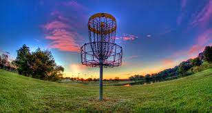

You may have heard of disc golf because of its rise to popularity during the Covid-19 pandemic. With its laid-back style of play, it is a great way to get into nature and have a good time with your friends, or by yourself.
Disc golf is played almost exactly like golf, except without the clubs or balls. The goal is to complete each hole with the fewest throws. Every hole has a designated “par”, or a set score. The par may be 3, 4, or 5 throws. Say for example on a par 3, you get it in the basket in 2 throws (Nice!). Your score for that hole would be -1. If you got it in 3, your score would be 0. In 4 throws, +1, and so on.
Each hole starts on a designated “tee area”, where your first throw will take place. Your next throw will be from where your first throw landed, and from there you keep throwing the disc until it reaches the target. The target can be anything from a pole to a tree, but most commonly, an elevated metal basket with chain links designed to catch the disc and drop it into the basket.
Each course is different, but there are usually obstacles such as trees, bushes, out-of-bounds areas or even buildings that make it more challenging to reach the target. Courses vary, but most are either 9 holes or 18 holes, with a variety of wooded and more open layouts. Most courses are free to play, unlike traditional golf courses where you must pay to play every time.